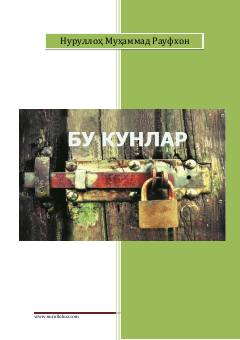

BKMustaqillik yillaridagi O'zbekistonning ijtimoiy-siyosiy hayoti haqida tanqidiy hujjatli roman.
Ushbu asar mustaqillik yillaridagi O'zbekistonning ijtimoiy-siyosiy hayoti, erkinlik, demokratiya va davlat boshqaruvi masalalariga bag'ishlangan hujjatli romandir. Muallif mamlakatning 20 yillik mustaqillik davridagi yutuq va kamchiliklarini tahlil qiladi. Kitob jamiyatdagi turli muammolarni ochiq va tanqidiy ruhda yoritadi.